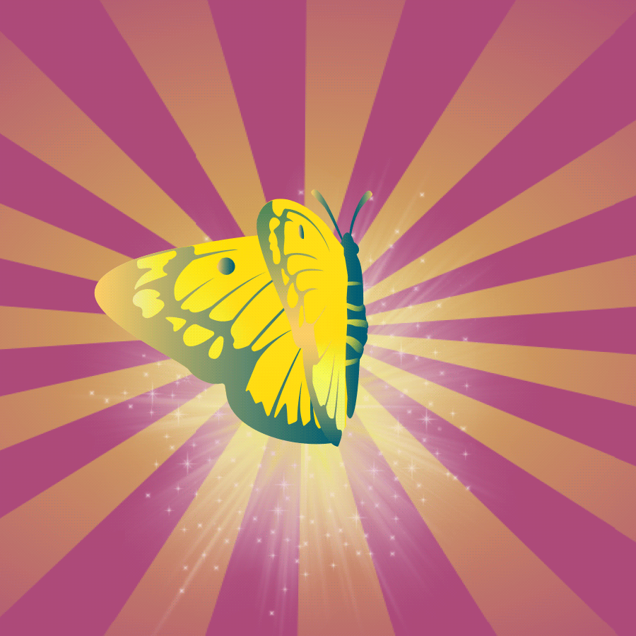

For as long as I can recall, I've always stuck out like a sore thumb; thing is, though, that with a sense of creativity, that can become a skill-stretching exercise in difficult times. While I never really felt a belonging anywhere for most of my life, I've always had my vast imagination to come back to.
The beauty about imagination is that it can help you escape the more difficult aspects of life. Imagination and reality, however, has always been a difficult balancing act for me - but when you don't feel like you have a place you can fit into, what options do you realistically have that don't kill a part of your soul? Well, along the way, I've learned ways to sometimes weave reality and creativity together - but it's required constant journeys off the beaten track. Bush whacking into guinea pig programs, self-directed projects, group exchanges and world travel, I've regularly woven out unique ways to help me through.
These experiences have always taught me amazing things - while sometimes traumatizing me in the process. After overdosing on ventures out into the world, at one point I hit a wall. Everything I'd been through up until that point came crashing in, and there was no stopping it. Burnt out and paralyzed by trauma, I was forced to give the journey a break for a year - which happened to hit 2 months before covid.
- 
Moving forwards, I decided that I had to weave my reality in a more self directed and behind-the-scenes manner. After enthusiastically trodding out into the unknown for years, I now needed something that wasn't going to be a surprise. While pondering the possibilities of dusting off my writing skills, I had a light bulb moment during a conversation with my former boss - the only thing I was missing that would help was multimedia skills! It was at this point that I knew my next step.
In January of 2021, I started taking the Multimedia Communications Program at the YukonU. Immediately feeling a connection with my instructor (and birthday buddy), Jon Gelinas, I knew this was the right path for me! While still burned out and navigating my mental health, I managed to attend the program part-time over the years.
This program not only got me to slowly step back out into the real world again, but it also helped me regain a sense of belonging with myself and my work. If it weren't for this experience, I never would have utilized my creative skills for digital design - something I've grown a strong appreciation for.
In a cookie cutter world, if you're able to have a say in how it's designed, I think it's better than not having any say. Moving forwards, I'm hoping my skills in writing and design can help shape parts of existence better, so that people like me don't always struggle to navigate a world that isn't built for us. If I can change even the tiniest thing to help others feel a sense of home in this world, I'll be more than content. Now that I've gained the skills necessary to weave parts of reality, it's time I find my own supplies and get to work.